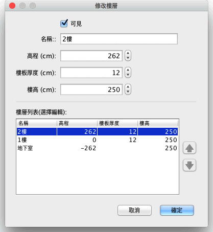

雙擊該樓層按鈕您可以編輯該樓層名稱、樓高、高程高度的30度對選項卡，或選擇平面圖→修改樓層...來自功能選單。 修改窗格中的一個樓層允許您編輯其屬性，所選擇當前編輯的樓層，也可以顯示表格描述所有房子的樓層

地板厚度適用於計算 3D 視圖中的某個樓層的樓層邊框。這種表面可見周圍在地板和夾層或陽臺的邊框。 高程可以是正數或負數。在以後的情況下，每次增加地下層將自動使傢俱、房間或封閉的牆被增加到地下層 3D 視圖中。可以使用此功能，在地上放置一個游泳池，或創建一個或多個樓層的地下室。
•
在平面圖頂部的選項中有相同的樓層高程，在列舉各樓層總表中顯示其高程，按樓層的名稱。使用表的右側箭頭更改的編輯樓層外觀的順序。依照更改高程和 (或) 的樓層外觀的順序會自動更新選項卡的順序